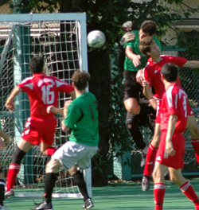
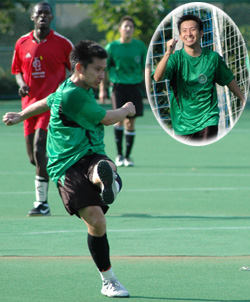
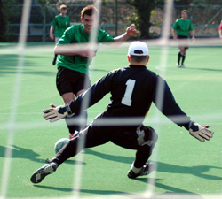

|  |
|
Bevan Colless rises above Captain Kirk to score the 1st.
|
The Swiss Kickers appear to have an uphill battle to reclaim their TML crown after a humbling 5-1 loss to Tokyo Hibernian at St Mary’s. The Hibs arrived an hour before the game got changed and had a team meeting before beginning their warm up 30 minutes before the kick off. In contrast the Swiss either were still having trouble with their famed watches or could be accused of showing arrogance or contempt for their opposition by showing up 10 minutes before kick off, many still getting changed at the scheduled kick off time. Their warm up consisted of a group hug while performing some ancient German chanting to the Gods. The old adage of “how you prepare is how you perform” never rang truer.
The Hibs got on top early and received a foul outside the box wide on the left. Josh Schirmer swung in a well weighted ball to the back post that saw Bevan hold off challenges by Kirk and Swiss keeper Peter to nod in from close range. The Swiss were not TML title holders for no reason and equalized mid way through the first half due to Bevan losing his man Kai from a corner who headed goal-wards only to be denied by sharp Hitoshi save, the rebound then fell to Angelo who bundled over from close range to level the scores at 1-1.
|  |
|
Keita Narama fires home Hibs' 2nd then celebrates(inset).
|
Swiss hopes were then dealt a blow when their talismanic midfielder Dave Pratt hobbled off with a heel injury, unable to return. The Swiss nearly went ahead before half time with a high bouncing ball about to be finished before Hibs’ man Kenji nipped in and cleared the danger. 1-1 at half time but the Hibs did have the better of play in the half.
Early 2nd half exchanges were mostly around the Swiss goal and early on Josh pushed a cross back in the mixer from some corner scraps and Naoki did well to get a foot on it, but he put it over the bar from 4 yards. 10 minutes in and it was time for some Keita magic. He picked the ball up and ran cross field from 25 yards and caught keeper Peter Pauli going the wrong way as he hit it on the run and put it inside the bottom left corner. 2-1 to the Hibs. Ike then lobbed in a free kick from the half way and the 6 foot plus Swiss defense then had to watch as the 5 foot Keita head perfectly with back to goal and snuck it inside the bottom left corner to make it 3-1. New Hibs signing Jay Alabaster then picked up the ball from inside his own half and sauntered through 3 half hearted challenges and once again beat keeper Pauli from outside the box in the same bottom left corner.
|  |
|
Bevan sends Peter Pauli the wrong way and tucks the ball into the corner.
|
To add insult to injury the Hibs then scored the goal of the game as Hitoshi cleared from the back finding Yasu on the right who controlled well first time and then found Yama, who rode one challenge and played in Keita who controlled and then flicked it on to Bevan who was in space and he dribbled into the box; he thought Peter Pauli was getting used to picking up the ball from the bottom left corner and kept things simple for him by tucking into the same spot.
Since the formation of the Tokyo Hibernian with the merger of the Albion and Irish in 2001, they had yet to defeat the Swiss in an 11 a side game. This made the comprehensive victory especially sweet.
Bevan Colless
|